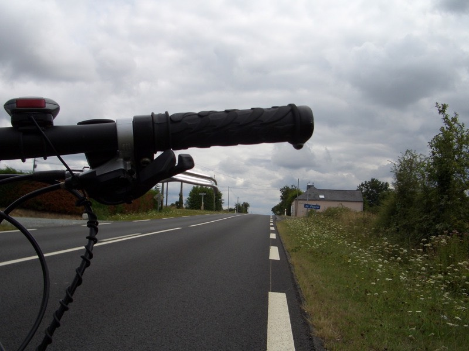
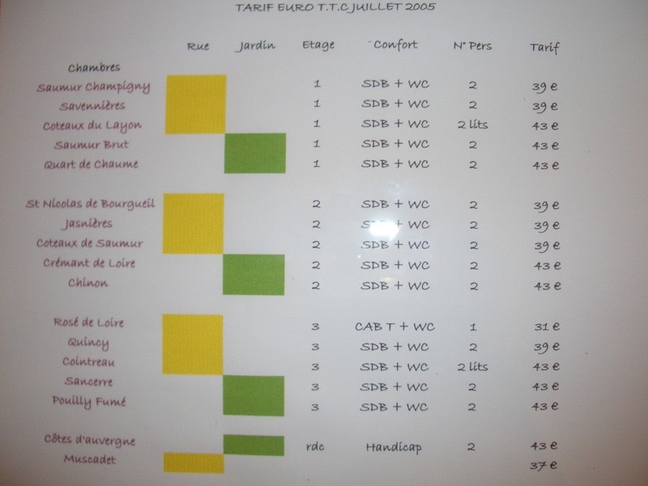

昨天好晚才找到過夜的地方，吃完晚餐已經將近深夜十一點。
盥洗完畢後，拖著疲憊的身體只想睡上一大覺，但還是打起精神敲敲鍵盤寫遊記到一點半。
隔天早上依舊睡到了九點才起床，先去吃早餐再說吧 :)
早上吃的大概還是那個樣子，麵包、草莓果醬、奶油、甜美的水果、配上一杯熱巧克力。
（經高人指點，水果黃的是杏桃Abricot，綠的是李子Prune vert）
吃習慣了法國的早餐，回台灣可能三不五時就要去麵包店買法國麵包回家啃了。

老闆叫做唐（Don），老闆娘叫Ellen（依蓮），法國的人情味好濃。
只要客人一進這家店，絕對都是每個人都先打過一聲招呼＆握手寒暄。
然後才開始買東西或是點餐，走了時候也是跟每個人都說掰掰，祝你今天好。
悠閒的吃著早餐，發現店裡面也賣一些像是自己種的蔬菜水果。
還有自己烤的麵包，順道買了一條看起來很好吃的法國麵包+乳酪+火腿。
長長的一條麵包，得對折切一半才裝的進包包裡頭，一路上分兩次吃，花1.5歐元就解決了午餐。
用餐時，隔壁桌也是在這邊住宿的客人，知道我在騎腳踏車環法，男主人Alex英文說的很好，
就跟他學了幾句很實用的法文，每次到了旅館，都結結巴巴講不清楚自己要一間房間過夜。
現在總會把相當實用的這句話給學了起來，當天晚上立刻就派上了用場。
Alex不僅英文說得好，另外像是德文、西班牙文、日文...etc都很流暢。
要是我也能說這麼多國的語言，出去旅行的時候一定能更順利呀∼
星期天的美麗早晨，帶著大家的祝福，信心滿滿的在早上十點二十分出發。
今天的目標是大城市『南特』，大約120公里吧，不遠不近的距離，一天移動剛剛好。
身上的這台iPod，雖然電池一直出狀況，控制轉盤也常秀斗，但少了它就沒有音樂陪伴。
這裡頭裝了有2851首歌，一直都用『隨機播放』的模式來聽，播什麼就聽什麼。
不得不說，蘋果的隨機亂數程式寫的未免太差了，有些歌曲已經重複聽了將近十遍。
但有些歌曲始終輪不到它登場，實在太不平均了，一直聽了22天，才聽到最喜愛的Globe
『So Far Away From Home』，精神為之一振！不曉得什麼叫做疲憊了∼
下午將近一點的時候，總算在路邊找到了無線網路訊號，趕緊上傳昨天曲折的故事。
希望今天可以平順一點，不用每天都搞得這麼緊張刺激。
騎了一整天的車，只靠著一瓶600CC的水，喝完就沒有了。
平常都是利用去麵包店買東西吃的時候順便裝水，但今天是星期天，
相當徹底的，所有的商店一率關門，一路這麼騎過來，沒有半家賣吃的或是喝的。
一瓶水，再怎麼省著喝，要撐一整天絕對是不夠的，從下午三點開始就陷入口渴的情況。
沿路看到幾家腳踏車店，結果都大門深鎖，門上貼了一張紙條，猜大概是說老闆去渡假了。
車子鍊條的狀況真的有點糟糕，騎起車來都是像這樣子的聲音。
這不是變速器沒有換好的緣故唷，一整路騎起來都像這樣，也不知道該怎麼補救才好。
想到應該在出發之前，跟Don問問看有沒有潤滑油之類的借我滴兩滴，只可惜太遲了。
路上好多的松果，這是我能撿到最小顆的一個，要是騎車被K到一粒的話，會不會眼冒金星呢？
連這麼古色古香的房子都不免俗套的裝上了衛星電視
到下午兩點之前，都算是偏多雲的天氣，很適合騎車。

下午兩點之後，太陽開始露臉，溫度大概會上升到24~5度左右，不會熱，但有點晒。
傳說中的穀物存放倉庫，只有在卡通裡看過。
開始漸漸的習慣路上隨時會出現的壯觀建築物。但依舊還是會『哇∼∼∼』的讚嘆一聲。
MAIRIE應該是市政府或是鄉公所之類的意思吧。想說去問問看能不能裝水，結果也是放假中。
看到一個抽水幫浦，會不會有奇蹟呢？很努力的抽了五分鐘的水，徒勞無功 /_\
後來看到像是學校的建築物，總算發現了水龍頭，結果是在建築物裡面，大門深鎖。
只能看著近在身邊的水龍頭，望著空蕩蕩的水瓶，吞個口水止渴。
這時候，就會『哇∼∼∼∼∼』的讚嘆。
一路就這麼口渴的騎到下午六點，終於發現營業中的商店。
店員是黑頭髮黃皮膚的亞洲人，裡頭也有賣些像是春捲和炒飯、麵類的食物。
都忘了口渴這回事，買了一條0.75歐元的春捲吃。
看起來醜醜的，但是味道一流呀！想必是個手藝很好的華人廚師做的吧。
六點鐘剛過，南特就到了，今天路線都很順暢，沒什麼太過激的爬坡，所以算是挺早到了。
開始找旅館吧∼
喔喔，客滿的牌子又掛出來了 ~.~ 別又來一次了。
繞呀繞的，好像南特都是兩顆星的旅館居多，價錢約40~50左右，多跑幾圈後發現一間算便宜的。
透過對講機，就不能比手畫腳了，用Alex今天教的法文，對方能聽懂，真是超有成就感！
這個是價目表，一般旅館都用數字當房間號碼，這間旅館給每個房間都取了名字。

我住最便宜的『Rose de Loire』，玫瑰小房？31歐元一晚上。
最物超所值的是，旅館有超高速無線上網的服務，總算不用在街頭拿iBook看風水了∼
進到房間，東西放下來，就黏在電腦前面，出了國還是這樣，離不開網路。
每天住宿的鑰匙我都會拍照起來，大多很有特色，像今天的鑰匙圈，是酒瓶的軟木塞。
背景是管提供的南特地圖，等等出去閒晃時很有幫助∼
八點左右，肚子有點餓了，趁天還沒黑，去找東西吃吧∼
南特是個相當有高科技未來感的城市，建築物跟街道都偏現代化，馬路寬的跟什麼一樣。
路上電車的軌道遍佈，大概取代了公車的地位了。
街上看到有人在玩滑板跟單車
玩累了喝水，要用手不停的轉動那個握把，像是研磨東西那樣，才會有水流出來，很有意思。

南特的火車站，可以說是透明的，採光極好！時鐘也夠大一個。
『哇∼∼∼∼』跟右邊四層樓的建築物相比，就可以想見它有多高。
生動的石像
不是在夕陽下騎車，就是急急忙忙的象徵唷∼今天可是無比的悠哉。
好像每個大城市，都一定會有美麗的河流過，幾乎是鐵一般準則。

壯觀的建築物一一出現，理論上應該到處都是觀光客，但不曉得為什麼，卻跟空城一樣。
星期天，商店不營業，連人們都不上街嗎？
商店休息的太徹底了，繞了一個小時，沒看到賣吃的。
連KEBAB店都關了起來，街上有很多連鎖披薩店的機車在跑來跑去，
雖然有找到店面，但太貴吃不起，而且大排長龍，看來大家都因為沒東西吃而困擾著。
總算發現營業中的雜貨店∼
小小一家店，什麼東西都有賣唷！真是佩服他們裝貨架的能力。
發現這幾天喝的蘋果酒都喝貴了，其實一大瓶，只要2歐元不到。
後來買了一大瓶的綜合果汁，1.6歐元，瓶子考慮當成第二個水壺備用，別在那麼口渴了。
還有一罐香腸罐頭，打開就可以吃，味道很讚！裡面有6條香腸，3歐元。
最後是超長的法國麵包，不對折的話帶不回來，一條當晚餐，一條當明天的早午餐，才0.65歐元。

這樣也是一頓豐盛的晚餐，晃到九點半才回旅館，FCR1停在旅館的庭院裡面。
有網路可以用的旅館，看來整夜都會耗在上面了 @@"